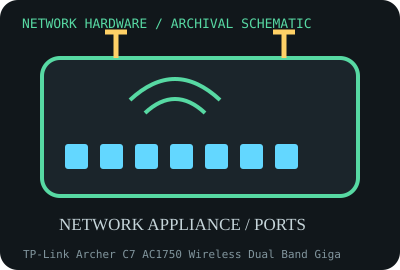

[ MODEL-SPECIFIC NETWORK HARDWARE RECORD ]
TP-Link Archer C7 AC1750 Wireless Dual Band Gigabit Router (V2)
Dual-band consumer router with one Gigabit WAN and four Gigabit LAN ports. This record identifies the stated model/revision; visually similar products may use different silicon or firmware.

IDENTIFICATION: Verify the full label, board revision, vendor/device IDs and regulatory markings before selecting firmware or drivers. Nominal PHY/link rates below are not measured application throughput.
Specifications and compatibility
| Subcategory | Network appliances: routers, access points & switches |
|---|---|
| Exact model | TP-Link Archer C7 AC1750 Wireless Dual Band Gigabit Router (V2) |
| Interface and connector | One 10/100/1000BASE-T WAN and four 10/100/1000BASE-T LAN ports; two USB 2.0 ports; external detachable antennas. |
| Controller / PHY / radio | 2.4 GHz 3x3 802.11n radio (up to 450 Mb/s) plus 5 GHz 3x3 802.11ac (up to 1300 Mb/s); version-specific Qualcomm Atheros platform. |
| Nominal throughput (not a test) | AC1750 label sums separate 450 and 1300 Mb/s band maxima, not one client throughput. Four LAN ports share switch capacity; WAN/NAT and Wi-Fi throughput are lower and workload dependent. |
| Measured throughput | No measured routing, NAT or Wi-Fi throughput is provided. Results need firmware, routing/NAT features, packet sizes, WAN/LAN topology, client, RF and test duration. |
| Driver / OS / firmware | Stock TP-Link firmware uses the router’s embedded OS and web UI; OpenWrt support may exist for specific hardware revisions, but image support and installation steps must be verified by exact label/device tree. No PC NIC driver applies. |
| Compatibility | Use correct 12 V power supply polarity/rating and regional firmware. WAN/LAN ports are Gigabit; features such as VPN, USB sharing and guest Wi-Fi depend on firmware and hardware resources. |
| Variant warning | Archer C7 V2 is not V1/V3/V4/V5 and firmware images are not interchangeable. Internal chipset, flash/RAM, radio calibration and bootloader differ; cross-flashing can brick the device. |
Variant and operating notes
Archer C7 V2 is not V1/V3/V4/V5 and firmware images are not interchangeable. Internal chipset, flash/RAM, radio calibration and bootloader differ; cross-flashing can brick the device.
Stock TP-Link firmware uses the router’s embedded OS and web UI; OpenWrt support may exist for specific hardware revisions, but image support and installation steps must be verified by exact label/device tree. No PC NIC driver applies.
Throughput policy: vendor/standard rates are labeled nominal. This archive includes no measured benchmark for this specimen; do not interpret a link rate or aggregate port capacity as sustained payload performance.
Archival, ESD and preservation notes
Retain bottom label, FCC ID, serial, power supply, antenna set and firmware build. Factory-reset state and credentials should be documented without preserving secrets; remove power and protect board from ESD during service.
Preserve the exact model/revision, serial/date code, firmware and driver versions, accessories, condition, source provenance, and source-document revision. Never retain access credentials or undocumented secrets in the public catalog.
Manufacturer and standards sources
- TP-Link Archer C7 V2 product/supportManufacturer or standards reference; match the complete model/revision before applying specifications.
- TP-Link Archer C7 product specificationsManufacturer or standards reference; match the complete model/revision before applying specifications.
- IEEE 802.11 working group standardsManufacturer or standards reference; match the complete model/revision before applying specifications.
Source coverage can be family-level; manufacturer documentation for the exact part number and hardware revision takes precedence. Standards describe protocol behavior, not a promise of real-world performance.